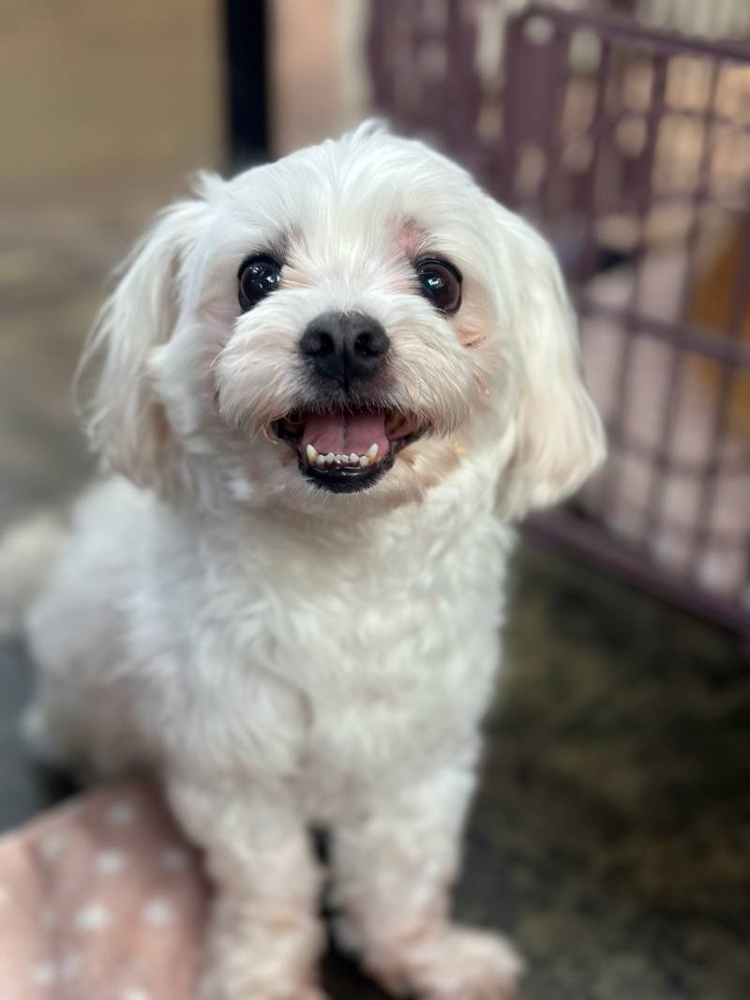
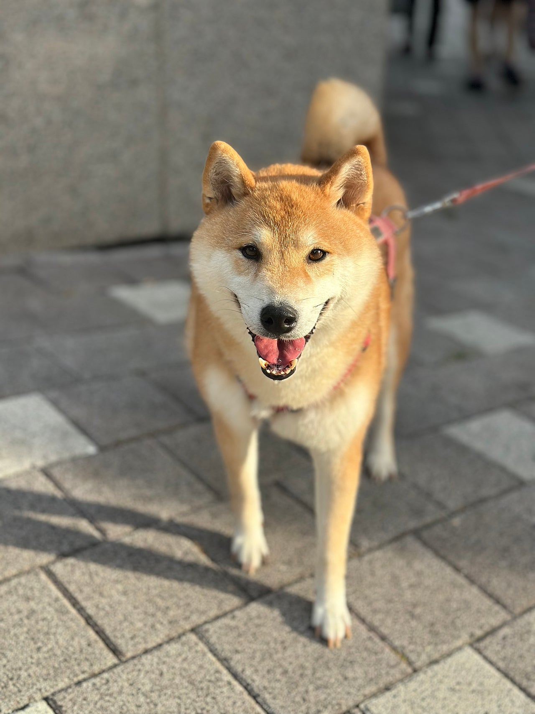
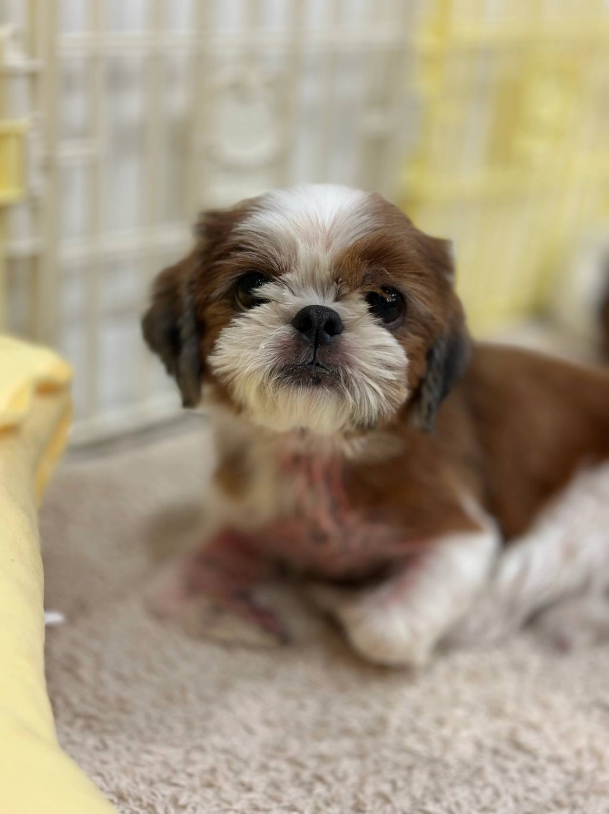

임신, 출산
출산 전후로돌보기 어렵거나아기와 함께 두기불안할 때
LOCAL GUIDE
아이의 입양은 물건을 구매하듯 쉽게 거래되는 것이 아니며 오랜 준비와 책임감이 필수적으로 수반됩니다. 과거의 상처를 보듬어주고 안정감을 선물할 수 있는 준비된 가정이어야만 좋은 인연을 맺을 수 있습니다. 사진만으로 성급히 판단하지 마시고 대면을 통해 깊은 교감을 나누어보세요.
REHOMING
개인적인 사정으로 반려견과 더 이상 함께하기 어려운 상황일 때 체계적인 절차를 거쳐 아이를 입소시키고 무료 분양으로 보금자리를 이어 줍니다. 전화 상담(0505-707-0401)을 통해 현재 상황을 파악하며 무리한 수용 대신 여건에 맞춰 신중하게 돌봄을 시작합니다.
갑작스러운 환경 변화 속에서도 아이가 평온함을 잃지 않도록 세심하게 보살피며 다음 행보를 준비합니다. 이는 책임 있는 보호 속에서 아이에게 새로운 가족을 만날 기회를 열어 주는 과정입니다.
새로운 가족을 찾아 주는 일은아이에게 건넬 수 있는마지막 선물입니다.
출산 전후로돌보기 어렵거나아기와 함께 두기불안할 때

함께 살다동물 알러지가 나타나생활이 어려워졌을 때

해외로 데려갈 수 없거나이사한 집에서함께하기 어려울 때군 입대와 오랜 부재도같은 경우에 가깝습니다.

보호자가 아프거나연로해졌을 때아이도 나이가 들어집에서 돌보기 어려울 때
상담부터 입양 공고까지, 순서는 같습니다.

유선 상담을 통해 나이, 지역, 질병 유무와 특이 상황을 확인합니다. 센터 내부 공간을 종합적으로 살펴본 뒤 1차 입소 가능 여부를 결정합니다.

직접 센터로 방문하시거나 이동 지원 일정을 조율하여 선택합니다. 전국 어디든 전담 인력이 무상으로 픽업하여 이동을 돕습니다.

제반 확인 사항과 규정된 비용 조항을 면밀하게 검토합니다. 안내 내용을 충분히 숙지한 후 정식 입소 동의서를 작성합니다.

건강 상태와 함께 대형견, 소형견, 노령견 여부를 다각도로 살핍니다. 확인된 상태에 맞춰 아이가 안전하게 머물 전용 공간을 정합니다.

안정적인 생활 속에서 아이의 사진과 영상을 정성껏 촬영합니다. 새로운 인연을 맞이할 수 있도록 사전 자료를 차분히 정리합니다.

공식적인 입양 공고를 등록하여 아이의 다음 여정을 이끕니다. 적합한 보금자리를 찾아 새로운 가족과 따뜻하게 연결됩니다.
개별 일과와 성향 점검을 거쳐 생활 적응을 준비하고 있는 강아지 현황입니다.
양육 환경과 반려견의 성향이 부합하는지 점검하는 순서입니다.
주거 형태, 가족 구성원의 동의 여부, 돌봄 시간 등을 유선 상담을 통해 점검합니다.
보호소에 방문하여 개체의 건강 이력과 행동 특성을 확인하고 직접 대면 시간을 가집니다.
지속 양육에 관한 세부 항목을 확인하고 확인 서류를 작성한 뒤 가정을 이룹니다.
산책하고, 밥 먹고, 미용하는 보호소의 하루입니다. 사진을 누르면 그 이야기를 볼 수 있어요.
안내
산책하기 좋은 공원이 가까운 순창 생활권은 반려견과 함께 건강한 일상을 가꾸기에 매우 적합한 환경입니다.
0505-464-1004에서 집의 상황과 찾는 강아지을 듣습니다. 맞지 않으면 다른 아이를 안내하거나 만남을 미룹니다. 순창강아지무료분양라고 해서 당일 입양이 되지는 않습니다.
극심한 신체 마비로 더 이상 반려견을 돌볼 수 없게 된 한 고령의 독거 어르신은 눈물 속에서 유기라는 극단적 잘못을 저지르지 않았습니다. 주변의 도움을 받아 입소 및 파양 전문 상담 번호인 0505-707-0401로 연락하여 정식 보호 절차를 밟았습니다.
보호소 측은 아이의 기존 병력과 성격을 상세히 넘겨받은 후 철저한 격리 검진을 거쳐 새로운 가족을 찾아주기 위한 보호 관리에 돌입했습니다. 순창 내에서 순창강아지무료분양 연결 고리를 지켜낸 이 어르신의 결단은 끝까지 책임을 다하고자 한 최소한의 양심이자 생명에 대한 예의였습니다.
입양 상담(0505-464-1004)과 파양 입소 상담(0505-707-0401)의 창구가 정확히 구분되어 있어 각자의 절박한 상황에 맞는 전문적인 도움을 받을 수 있었습니다.
불가피한 질병, 해외 이주, 경제적 파탄 등 피치 못할 사유로 더 이상 가족을 보살피기 힘든 한계 상황에 부딪힐 때가 있습니다. 거리로 유기하거나 방치하는 비극을 막기 위해 체계적인 입소 및 파양 안내를 담당하는 전용 소통 창구(0505-707-0401)가 상시 운영되고 있습니다.
입소 과정에서는 아이의 건강 상태, 백신 접종 내역, 기질적 특성에 대한 솔직한 정보 제공이 이루어져야 다음 단계의 안전한 보호가 가능해집니다. 순창 인근에서 순창강아지무료분양 연계가 필요한 상황이라도 당일 즉각 입소는 불가하며 사전 예약 및 적합성 검토를 거쳐야 함을 양지하시기 바랍니다.
아이의 행복을 위해 입양을 문의하는 번호(0505-464-1004)와 입소를 안내하는 번호(0505-707-0401)를 목적에 맞추어 명확히 구분해 이용해 주시기 바랍니다.
아이가 첫 발을 디딜 실내 공간은 안전사고를 유발할 수 있는 잠재적 위험 요소를 사전에 완벽히 제거해 두어야 합니다. 특히 호기심이 많은 어린 개체나 불안감이 높은 아이는 작은 이물질을 삼키거나 틈새로 파고드는 위험 행동을 보일 수 있습니다.
미끄러운 마룻바닥은 성장기 관절과 슬개골 탈구에 치명적이므로 보행 동선을 따라 매트를 시공하는 작업이 선행되어야 합니다. 순창 실내 공간에 순창강아지무료분양 가족을 들이기 전, 아래의 안전 장치들이 온전히 구비되었는지 최종 점검하시기 바랍니다.
반려견의 눈높이에서 실내 바닥을 내려다보며 위험 요소를 찾아내는 세심한 시각이 필수적입니다.
생후 수개월의 유년기 개체와 성견, 그리고 노령견은 하루 동안 요구하는 에너지 소모량과 돌봄의 밀도가 완전히 다릅니다. 성장기 자묘나 자견의 경우 잦은 배식과 세심한 사회화 놀이가 필수적인 반면, 성견은 이미 형성된 기질에 맞추어 안정된 루틴을 조성해주는 것이 중요합니다.
소형견, 중형견, 대형견 등 체급에 따라 필요한 실내 활동 반경과 산책 강도 역시 크게 상이하므로 보호자의 신체적 여력이 뒷받침되어야 합니다. 순창 생활권에서 알맞은 순창강아지무료분양 방식을 고민하신다면, 본인의 운동 패턴과 주말 여가 시간을 아이의 에너지 레벨과 일치시키는 현명한 선택이 필요합니다.
보호자의 라이프스타일과 맞지 않는 과도한 활동량 매칭은 양측 모두에게 만성적인 피로와 스트레스를 유발할 수 있으므로 현실적인 접근이 필수적입니다.
대면이 원만히 성사되면 보호소의 담당 관리자가 동석한 가운데 아이의 머리부터 발끝까지 신체 컨디션을 공동으로 확인합니다. 안구의 투명도, 콧물 유무, 귓속 분비물, 치아 마모도, 피부 각질 및 슬개골 탈구 여부를 체계적인 체크리스트를 바탕으로 점검합니다.
이와 함께 종합백신, 코로나, 켄넬코프 등 기존에 완료된 예방접종 차수와 내외부 구충제 투약 일자가 명시된 관리 수첩을 인계해 드립니다. 순창 내에서 순창강아지무료분양 절차를 완성해 나가는 과정에서 이전까지 섭취하던 사료의 종류와 1일 급여량, 배변 패드 사용 습관까지 상세히 기록해 드립니다.
인계 시점의 건강 상태를 가감 없이 투명하게 공유함으로써 가정으로 이동한 후 발생할 수 있는 건강 분쟁을 사전에 방지합니다.
보호 시설에서 생활하던 1세령의 아이는 실외 배변만을 고집하고 특정 성분의 건식 사료에 민감한 장을 지니고 있었습니다. 입양 서약 단계에서 담당자는 이 아이의 사료 급여 일지와 배변 패턴 기록을 새로운 보호자에게 상세히 인계했습니다.
보호자는 인계받은 지침대로 첫 일주일간 기존 사료를 동일하게 급여하며 하루 세 번 규칙적인 야외 배변 산책을 진행했습니다. 순창의 새로운 주거 공간에서 순창강아지무료분양 성공을 이끌어낸 이 가족은 실내 배변 실수나 소화기 질환으로 인한 스트레스 없이 아주 매끄러운 초기 적응기를 보낼 수 있었습니다.
이전 보호 환경에서 축적된 생활 습관 데이터를 꼼꼼히 넘겨받고 실천하는 것이 얼마나 중요한지 증명해 준 사례입니다.
자신의 출퇴근 시간, 주말 활동 방식, 체력 수준을 객관적으로 분석하지 않은 채 무작정 체급이나 견종을 고르는 것은 매우 위험합니다. 왕성한 에너지를 분출해야 하는 중대형 강아지 개체의 경우 하루 최소 1~2시간 이상의 고강도 야외 산책이 필수적입니다.
반면 직장 생활로 집을 비우는 시간이 다소 긴 편이라면, 넘치는 에너지의 어린 자견보다는 성향이 이미 온화하게 정착된 성견을 맞이하는 편이 서로에게 훨씬 유익합니다. 순창 일상 속에서 편안한 순창강아지무료분양 결실을 맺기 위해서는 내 일과의 빈틈에 무리 없이 들어올 수 있는 체급과 활동량을 상담원과 조율해야 합니다.
유선 상담(0505-464-1004) 시 본인의 하루 평균 산책 가능 시간과 거주 평수를 정확히 밝혀주시면 가장 최적화된 친구를 추천해 드립니다.
반려동물 양육은 특정 1인만의 몫이 아니며, 한 공간을 공유하는 동거인 전원의 헌신과 배려가 바탕이 되어야만 지속될 수 있습니다. 구성원 중 단 한 사람이라도 입양에 소극적이거나 반대 의견을 지니고 있다면 파양의 도화선이 될 위험이 매우 높습니다.
또한 겉으로는 드러나지 않던 털 알레르기가 함께 생활하는 과정에서 급성 천식이나 결막염으로 발현되는 경우가 허다합니다. 순창에서 건강한 순창강아지무료분양 문화를 완성하기 위해, 입양 서약 전 가족 전원의 동의 서명과 항원 반응 유무를 명확히 체크해야 합니다.
임신, 출산, 군 입대, 유학 등 향후 5년 내에 발생할 수 있는 가족의 생애 주기 변화까지 입양 전 논의 테이블에 올려야 합니다.
유선 상담을 통해 기본적인 교감이 이루어졌다면, 입양 희망자의 주거 공간과 가족 구성원의 신체적 반응을 세밀히 검토해야 합니다. 실내 바닥의 미끄럼 방지 매트 시공 상태, 방충망 및 펜스 설치 여부 등 안전사고를 미연에 방지할 수 있는 환경이 조성되어 있는지 확인하는 단계입니다.
가족 중 털이나 각질, 침 등으로 인한 알레르기 반응을 보이는 구성원이 없는지 확인하는 일은 파양이라는 가슴 아픈 결과를 막기 위해 결코 생략할 수 없는 과정입니다. 순창 환경에서 장기적인 순창강아지무료분양 계획을 세우실 때에는 가족 모두가 사전에 충분한 접촉 테스트를 거쳐 신체적 거부 반응이 없음을 확증해야 합니다.
환경적 결격 사유가 사전에 보완되지 않는다면 새로운 공간에 입소하는 강아지 친구가 극심한 분리불안이나 스트레스 반응을 보일 수 있으므로 철저한 대비가 요구됩니다.
입양 자격 심층 인터뷰 및 교육 이수
기초 훈련 방법, 이상 행동 대처 요령, 반려인으로서의 법적 의무 사항에 대해 면밀한 교육과 문답을 거칩니다.
전용 번호 상담 및 입양 신청서 작성
0505-464-1004 유선 창구를 통해 입양을 원하는 개체와 신청자의 주거 환경, 가족 구성원의 동의를 확인합니다.
유선 사전 심사 및 반려 자격 스크리닝
신청자의 과거 반려 경험, 경제적 여력, 거주지 환경을 종합적으로 검토하여 1차 입양 적합성을 평가합니다.
순창강아지무료분양는 어디서 문의하나요?입양 상담 전화는 0505-464-1004입니다. 순창에서 강아지 입양을 알아보면 생활을 듣고 만날 아이를 안내합니다.
순창에 따로 적힌 보호소 주소가 있나요?순창강아지무료분양 페이지는 순창 상담 안내입니다. 이 글에 없는 주소를 그 지역 지점이라고 안내하지 않습니다.
전화하면 바로 진행되나요?자리가 없거나 생활이 맞지 않으면 바로 진행되지 않습니다. 전화로 확인한 뒤 만남을 정합니다.
온라인 공고의 사진만 보고 즉시 입양을 확정해도 되나요?사진 속 모습과 실제 기질이나 활동량에 큰 차이가 있을 수 있으므로 현장 방문을 통한 직접 대면 교감이 필수 조건입니다.
입양을 진행할 때 지참해야 하는 서류는 무엇인가요?입양 희망자의 본인 확인 신분증 사본, 거주지 형태를 증빙할 수 있는 서류, 동물등록 변경을 위한 서류가 필요합니다.
입양 시 발생하는 제반 비용이나 책임비는 어떻게 되나요?생명을 0원에 거래하는 구조가 아니며 기초 건강검진, 예방접종, 중성화 수술 지원 등 기본 케어 실비에 따라 유선상으로 투명하게 안내합니다.
지방 거주자의 경우 자택 픽업이나 탁송으로 아이를 받을 수 있나요?생명을 직접 보지도 않고 물건처럼 택배 배송하듯 보내는 방식은 절대 불가능하며 반드시 현장 대면 교감을 거쳐야 합니다.





CONTACT
입양과 입소, 전국 어디서든 전화로 상담합니다.
전국 입소문의